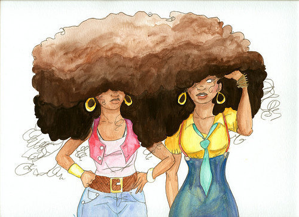
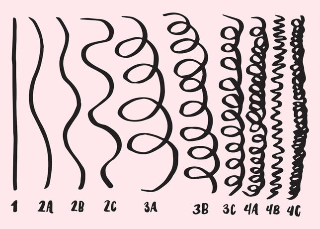
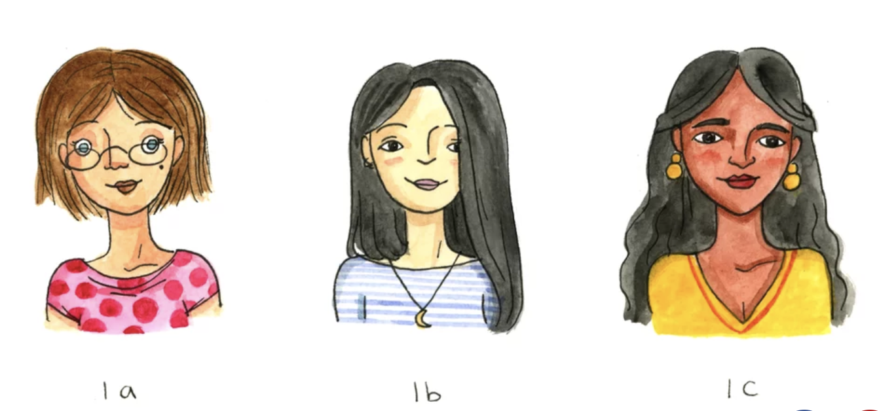
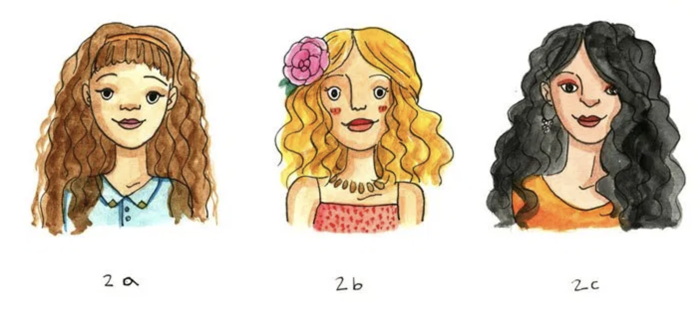
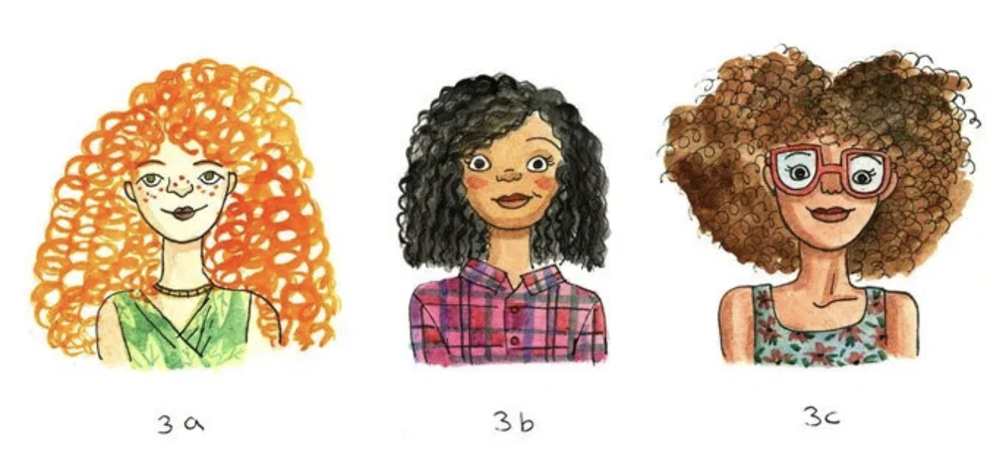
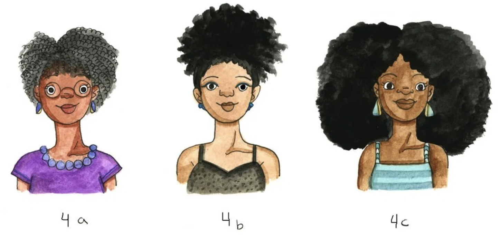
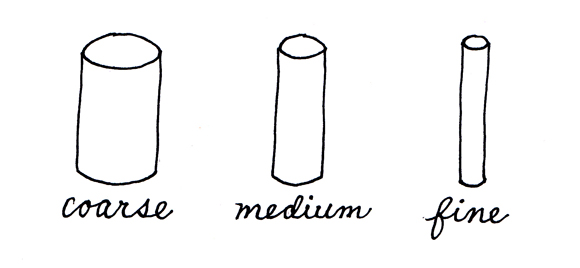
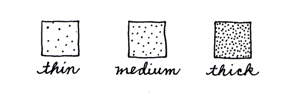

Understanding Your Hair Type
Though mostly subjective, it is useful to know which type of natural hair type you have. This is a crucial step in better understanding what hair products to choose and what hair styles work best for you.
The Science Behind Your Hair Type
The primary material your body uses to produce hair is a protein kratin. The curliness of ones hair is often times associated with the distribution of keratin on the hair itself. A curly strand of hair will have more keratin on the inner side of the curl in comparison to the outer side. While those with straight hair have keratin more evenly distributed.
When looking at each strand of hair, it relies on a follicle to stay anchored in your skin; it is also the source of your hair growth. The shape of your follicles helps determine the curliness, waviness, or straightness of your hair.
If the bulb-like shape at the base of a follicle is asymmetrical, the hair growing from it will be curlier. If this bulb is round and symmetrical, the hair will grow out straighter.
Hair Typing System
The classifications of hair types uses an alpha-numeric system ranging from letters A through C and numbers 1 through 4. These hair types differ in width and diameter of curls, waves, or coil pattern. The Andre Walker Hair Typing System is the most widely used to classify hair.
Type 1
Type 1 is straight hair. This type of hair is generally the most damage resistent and usually the most difficult to curl this hair texture. Due to the sebum easily spreading across the hair, it is usually the oilliest hair texture.
Type 2
Type 2 is wavy hair, whose texture and sheen range somewhere between straight and curly hair. Wavy hair is also more likely to become frizzy than straight hair. While type A waves can easily alternate between straight and curly styles, type B and C Wavy hair is resistant to styling.
Type 3
Type 3 is curly hair known to have an S-shape. The curl pattern may resemble a lowercase “s”, uppercase “S”, or sometimes an uppercase “Z” or lowercase “z”. This hair type is usually voluminous, “climate dependent (humidity = frizz), and damage prone.” Lack of proper care causes less defined curls.
Type 4
Type 4 is kinky hair, which features a tightly coiled curl pattern (or no discernible curl pattern at all) that is often fragile with a very high density. This type of hair shrinks when wet and because it has fewer cuticle layers than other hair types it is more susceptible to damage.
Width and Density of Hair
Knowing the thickness of your hair will help you to better identify the type of products you should be using. Thich coarse hair (which is more frizz-prone) will need more hydration. So, products that offer deep moisturisation would help those with this particular hair type. Fine hair, on the other hand, tend to need less moisture because it can lead to more oil build up, so a clarifying shampoo might be more useful.
Density refers to the thickness or volume of your hair. Hair density can be high low or medium. Observe if you are able to see your scalp through the strands. If you can easily do so, you have low density hair. If you can see partly or no part of your scalp at all, you have medium and high density hair respectively. Another method is to hold your hair in a ponytail. Then measure the circumference of the pony tail using a string. Low density hair will be less than two inches, medium density will measure between two to three inches, and high density will be at least four inches.